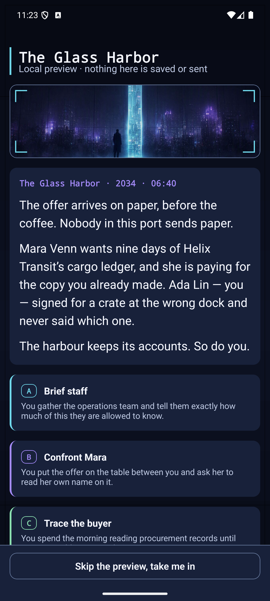

Scene 07 · The Experience
A Company. An Offer. Divided Loyalties.
In The Glass Harbor, you are Alex Vale, founder and CEO of Helix Transit. An acquisition offer tests your partnership with Mara, while investor pressure and employees' futures pull you in different directions.
This guided scenario pairs deterministic simulation with AI prose. Weigh the terms, question the evidence, and see how your decisions change resources, relationships, and story arcs.
Release status
Interface preview · The Glass Harbor